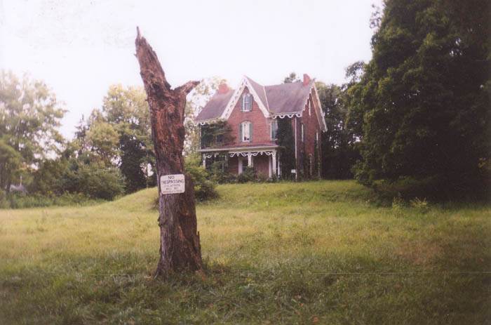
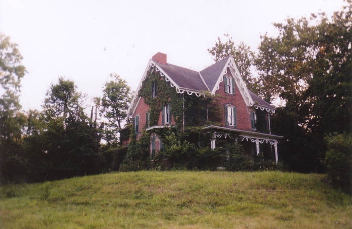
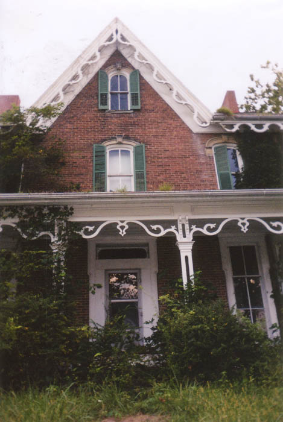
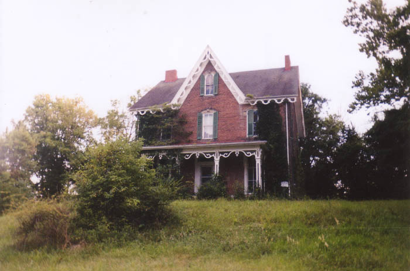
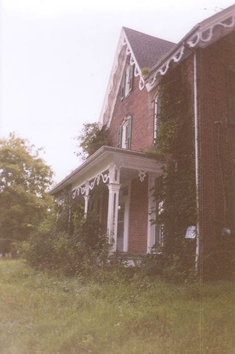
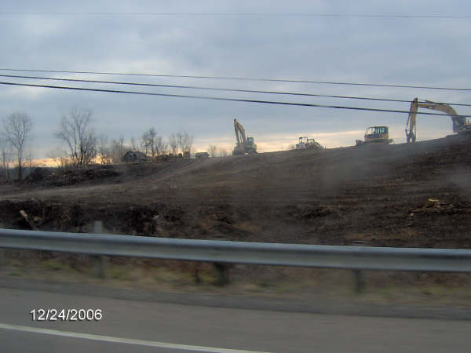
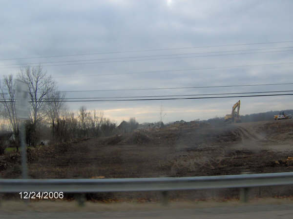

Avondale is a little town located just west of Zanesville on Route 22, at the intersection with 93. There are no other roads in this town, which contains only a handful of residents. The largest and nicest home in Avondale stands on 22 just a few feet from the intersection and has been abandoned for roughly thirty years. This is the Sidwell House--one of Muskingum County's best-known and scariest haunted houses.

What happened at the Sidwell House, and why is it unoccupied? As is always the case with local legends, there are conflicting reports. Every version seems to deal with a family murder here, although the specifics vary. The Sidwells are apparently the current owners and may have nothing to do with the last family who lived here. According to reports I've gotten, the house hasn't been occupied since at least the early 1970s and possibly as far back as the 50s. One story says the last family was a newlywed couple who were murdered in their beds by an unknown assailant. Another story is more elaborate. This is how it was told to me via e-mail:
Back in the late 40s/early 50s a family of about 6 lived in the home--four children, a mother, and a drunken father. The father, who was also very abusive, came in late one night very drunk. He climbed the stairs to the bedroom and began fighting with his young wife, and stormed away. The next morning she arose from bed to find him gone. She searched the upstairs, but he was nowhere to be found. Descending the stairs she looked everywhere and finally found him stitting in a chair in the living room with his bottle. She began to cook breakfast. Arising from his chair he grabbed the shotgun from the closet, went to the kitchen, and found his wife standing in front of the stove. He raised the shotgun and repeatedly shot her from the back of her head to the back of her knees. He then quietly walked up the stairs to his childrens bedrooms and shot all four of his young children in their beds, then proceeded to shoot himself hours later. This is the story I had heard from my grandma for as long as I can remember. She said you could find it on every radio station and newspaper cover for a hundred miles.
All of which makes you wonder why the guy did it, when he could have had breakfast if he'd just waited another hour. At any rate, the house is now supposed to be the site of mysterious lights in the windows, gunshot sounds, even the smell of bacon cooking in the early mornings. The murdered family is said to haunt its rooms and halls. This is why the house isn't occupied; no one stays long. According to the person who wrote the e-mail, her attempts to question the old-timers at Whitey's, which is the diner around the corner and just about the only business in Avondale, were met with the cold shoulder. Somebody even called the house "evil." But is there really anything to the ghost legends associated with this house?
Members of the family which last occupied it say the answer is probably not. I heard from the grown children of the White family in January of 2003, and they were able to fill in many of the factual blanks in the house's true backstory.
According to them, it was built in the 1840s by the Rankin family. The Rankins farmed the surrounding land and built was was apparently an immense barn on the property--three stories tall with livestock stalls on the second floor. They also operated the place as an inn (The Rankin Inn) and held horse races on a track out back. As is usually the case with large Civil War-era houses, it's rumored that it was a stop on the Underground Railroad. Marks on the cellar walls are supposed to have been left by slaves who counted the days before the next leg of their journey. (This is remarkably similar to Brown County's Rankin House, a very historic confirmed station on the Railroad with its own ghost stories.) The last surviving member of this Rankin family was Winifred Vogt, who died there in 1963. She was a schoolteacher whose fiancee left her on her wedding night.
In 1968 the White family purchased the house from the Sidwell Brothers Limestone Company and moved in--two parents, five kids, and an uncle who sometimes lived there as well. This is the family about whom the legends arose, long after the kids had grown up and moved out. The truth is that they were a fairly normal family. The father of the family owned a trucking company, worked on his vehicles in the barn, and definitely never killed his wife or any of his kids. They sold the house back to the Sidwells in 1982 or 83, after which it apparently lingered in escrow during the divorce of one of the brothers. That's probably why it's still abandoned.
A clue as to why such horrible stories are told about a family which could only have been the Whites is the fact that Mr. and Mrs. White had what their children term a "rocky" marriage. Mr. White did drink a lot. And he owned a lot of guns, which he would sometimes show his children how to fire in the back yard. Things like this aren't too far outside the norm, and they probably would have been forgotten by neighbors if the house they lived in hadn't eventually been left abandoned. There's just something about a scary-looking place that demands ghost stories.

However, that might not be all there is to the story. Several of the Whites had experiences in their very old home which might be classified as supernatural. Here are a few examples:
1. One night my uncle and I were the only ones there and we were getting ready to go to bed. I could hear the sound of glass tinkling, as if drinking glasses were being carried on a tray. It was coming from the upstairs hallway. I could hear it clearly, but my uncle, who was nearby, didn't notice it. One night, later on, my mother was sleeping in one of the downstairs living rooms and heard the exact same sound.
2. There was a barn on the property and it was one of the largest barns around. My dad had a trucking company and was working late one night on one of his trucks. The barn had 3 levels and the 2nd level was where livestock were kept. At the time there was no animals in the whole barn. My dad heard noises as if there was a stampede in the second level. There were all kinds of animal noises coming from the lower level, like it was full of livestock. It scared my dad so bad he later told my grandfather that the hair was standing up on the back of his neck. Years later, after we moved away, a man in his eighties was talking to my brother. He said that back when he was a little boy he was playing hide and seek with other kids there. He went into the barn and climbed up in a loft on the top floor. He said when he was hiding there he heard the exact same noises my dad heard. It scared him because there was no livestock in the barn at that time either.
3. An experience that I myself had was when I was alone in the kitchen. I heard the slam of the back door that went out on to the enclosed porch. I knew I should not have heard anything because I was looking at the door at the time and it was shut. Immediately following, there was a loud rap on the window nearest the stairwell going up behind the bathroom. Scared the shit out of me, I don't mind saying. I went to the window thinking it was one of brothers and looked out. There was no one there.
That was the White family's experience with ghosts at the historic house at 22 and 93--but they were not the first. A Ms. Katherine Martin of Cincinnati wrote with an excerpt from an old family letter, describing where her forebears lived, even though she's not positive just who was there at the time and when. She has a general idea that it was around 1858, and that Marianna Jackson was one of the residents at that time. Here is the paragraph, transcribed verbatim:
"Hugh was so ill from malaria that Father took a pleasant house in Avondale that the child might have milk from their own cow. That is the house where everybody but Father suffered so from evil spirits (ghosts). I have never read any true account of spiritual manifestations to equal it. I was born there in October 1858. At last, Dearest said she'd not stay there another day, and so, belatedly, Father took a house in Cincinnati."
An absolutely incredible find. There is little doubt in Ms. Martin's mind that the "pleasant house in Avondale" described in the letter is the Sidwell House. We are left to wonder just what the "evil spirits" did that made eveyone but Father so miserable.
This background material adds greatly to our understanding of this mysterious house; my thanks to the White family and Katherine Martin for their help with the story.

Whether or not the stories are true, the Sidwell House in Avondale does stand vacant in a hollow off Route 22. It's quite visible from the highway, which has probably helped its reputation. People who've never heard of the ghosts have seen the house and wondered why nobody has bought it by now. It really is amazing, considering how attractive it is after all these years empty, and the nice way it sits on a hill in the middle of its own little hollow. The location isn't bad at all. Divorce or not, why hasn't somebody snapped this place up? It's similar to the case of Mudhouse Mansion.
After first noticing the Sidwell House and then receiving a few different e-mails about it, I decided to check it out for myself. After two or three attempts which were foiled by parking difficulties (there is nowhere to park in Avondale) we just pulled over on 93 one night in September 2002 and walked up to the gated driveway. To see what we found inside, click below.

ENTER
UPDATE
Alas, the Sidwell House is no more. Nothing this interesting, cool, and historically valuable can be left standing in the world of Wal-Mart and Starbucks, a mall at every freeway interchange and a condominium block at every crossroad. Slowly but surely, Zanesville and its environs are being suburbanized for (mainly Columbus-bound) commuters, and this grand old haunted farmhouse, as beautiful and picture-perfect as it was, breathed its last on the Monday before Christmas, December 18, 2006.
One source tells me that they made an attempt to load the house onto a flatbed truck and move it, similar to what happened when Circleville's Octagon House was threatened by development, but it didn't work, so they simply knocked it flat instead. Whether they tried or not, the Sidwell House (or the Rankin House, as it should more appropriately be remembered) is nothing but a memory now. Also claimed in this massacre of local history was the (very meager) remains of an abandoned amusement park I'd been trying to get some photos of for a while, the Moxahala; and they shut down and demolished the old restaurant around the corner called Whitey's. They chopped down the old trees that gave the hollow surrounding the house and the hill above the town much of its character. They even bulldozed the hilltop and filled in a lot of the "hollow" with the foundation and cellar of the Sidwell House. All of which means that about one-third of Avondale has been wiped away, apparently to be replaced by something--at least judging by the amount of construction equipment to be seen near the corner of Routes 22 and 93. What will it be--a Home Depot? A new neighborhood of prefab M/I homes in the owner's choice of three exciting layouts? Maybe a shiny new stripmall? Only time will tell.


As you can probably see, these photos were taken on Christmas Eve of 2006, just days after they did away with the house. (Thanks to Tim Holdcroft for the images.) The featureless plowed dirt field doesn't even resemble the intersection as it appeared pre-demolition. It's pretty clear that they're bringing the roadside up to be level with the highway beside it, but beyond that, I'm not sure what's going on. Anyone with further information about the fate of the Sidwell House, maybe a newspaper article about the demolition, or even a rumor about what's next for the location--please drop me a line. In the meantime, we should mourn the Sidwell House, which lent its character to this little corner of Ohio for more than a century and a half.
Back